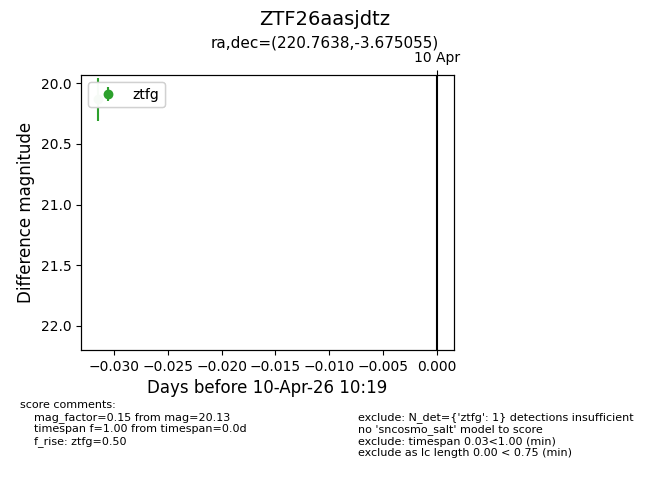
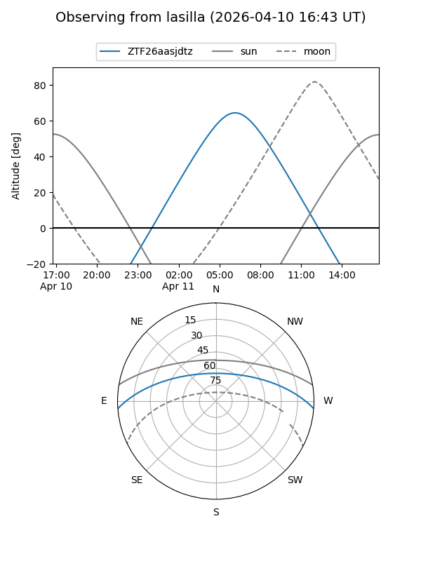
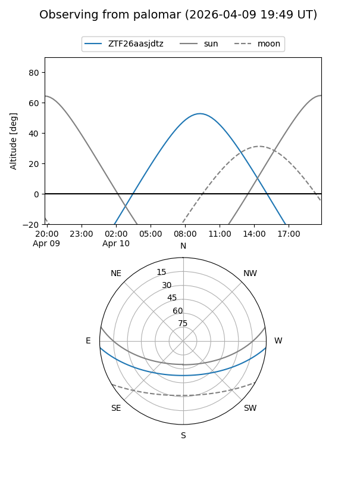
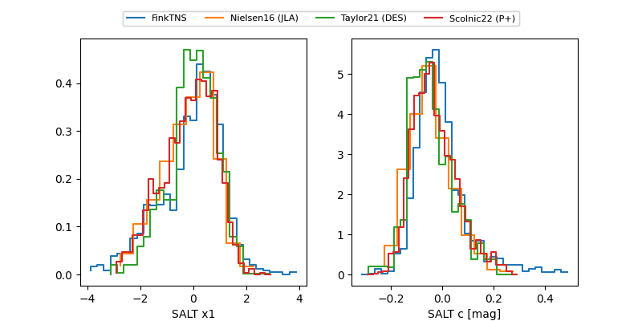

ZTF26aasjdtz
Target ZTF26aasjdtz at 2026-04-10 10:25
Aliases and brokers:
FINK: link
Lasair: link
ALeRCE: link
alt names
ZTF26aasjdtz (ztf,fink_ztf)
Coordinates:
equatorial (ra, dec) = 220.7638,-3.67506
equatorial (HMS+DMS) = 14:43:03.30,-03:40:30.20
galactic (l, b) = (348.4175,+49.08349)
Flags:
Photometry:
last ztfg=20.13
1 ztfg detections
Lightcurve

Visibility


Additional plots
